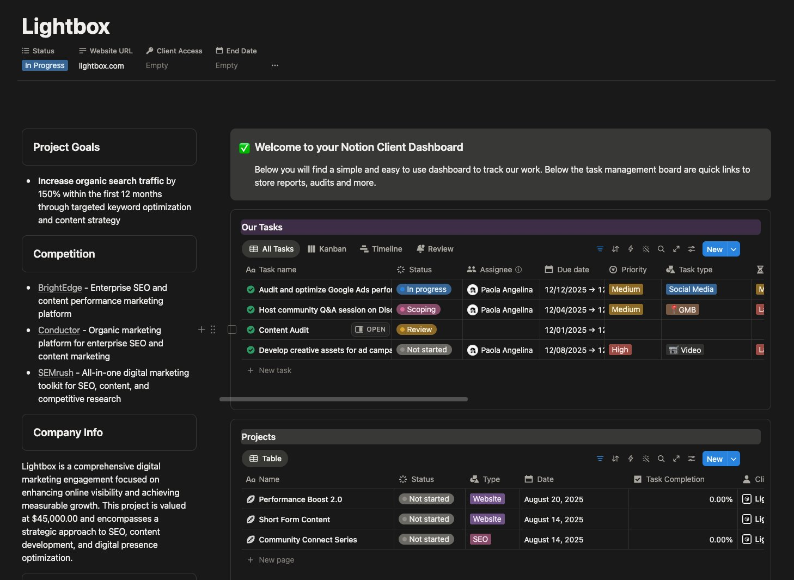
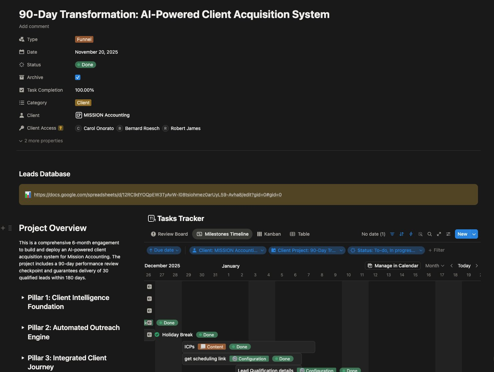
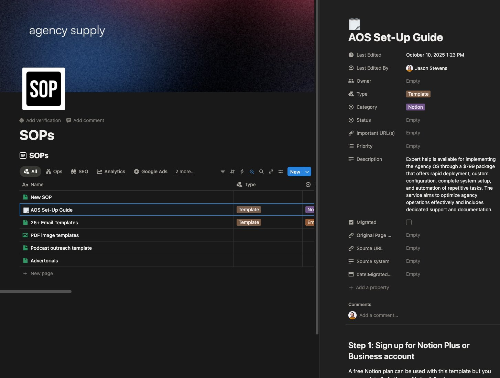

Tools change
The model, interface and favourite harness will keep moving.
RENT THIS LAYER MEZ SYSTEMSCOHERENT SYNTHESIS 01
MEZ SYSTEMSCOHERENT SYNTHESIS 01
Human feedback applied · Research only
BUILT BY MEZ STUDIOS · FOR AI-NATIVE OPERATORS
Use the best intelligence available. Own the context, workflows and operating infrastructure that make it useful.
MZ-G13 · AI OS
A structured operating system for tasks, projects, decisions, documentation and the context your AI needs.
THE STACK IS UPSIDE DOWN
Most AI products ask you to rebuild your business around another interface. Mez Systems begins with what should remain yours.
The model, interface and favourite harness will keep moving.
RENT THIS LAYERContext, decisions, workflows and operating history become more valuable over time.
OWN THIS LAYERBetter intelligence becomes useful without forcing the business to start again.
BUILD THIS ONCETHE MEZ SYSTEMS PRINCIPLE
Build the system. Rent the model.
BUILT ON OURSELVES FIRST
We build against real operating pressure, run the system, find what breaks and only then package it for another operator.

The gradient identifies the installed product. It does not colour the entire page.


Representative Mez Studios operating artefacts. These test the evidence system and are not presented as AI OS screenshots.
AI OSAVAILABLE NOW
AI OS connects tasks, projects, clients, goals, decisions, documentation and planning in one structured Notion operating system.
See what matters before opening another blank chat.
Keep goals, decisions and documentation connected to execution.
Build an operating memory that outlasts any one model.
THE PRODUCT FAMILY
Each product solves one operating problem. The family stays consistent through equal geometry, evidence and the layer you own.
Find where AI actually belongs in your business.
Understand · Map · Rank · RunTurn every campaign into a compounding intelligence loop.
Research · Create · Test · LearnTurn Claude Code into a business-aware execution environment.
Context · Skills · Execute · ApproveTurn scattered ideas into a compounding content system.
Signals · Ideas · Publish · LearnGROW INTO THE FAMILY
The operating layer bundlePlanned after the individual systems are proven.
START WITH THE OWNED LAYER
Build the system.